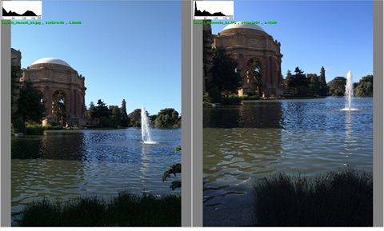

The histogram AEC luma target adjustment feature modifies the luma target based on histogram analysis.
Standard AEC tuning features primarily
work by changing the luma calculation. This can result in stability issues if parameters
are overtuned (e.g., bright region, dark region). Tuning the luma target based on
histogram analysis results in better exposure for a variety of scenarios. Minimal tuning
is needed to achieve reasonable effects. Histogram AEC is not heavily tied to sensor
characteristics, so retuning is not necessary for different sensors.
The histogram AEC luma target feature can be effective in the following
situations:
- Improves brightness compensation for a flat scene (e.g., white board). Histogram AEC can be used instead of the flat scene detection feature.
- Increases brightness in certain low dynamic range scenes to improve
visibility in darker areas and overall contrast.Figure : (L) Histogram metering applied; (R) Original image

The image on the left shows the histogram AEC algorithm applied. The feature increases the exposure to fill the histogram range, up to a cap, which improves contrast and dark area visibility.
- Prevents mild saturation in high dynamic range scenes that have overexposed areas.
The histogram AEC feature is is tuned using the generic multizone tuning guidelines. Default AEC triggers are initially tuned in a common step and then copied over to histogram metering.
| Parameter | Description | Range | Default |
|---|---|---|---|
| hist_target_adjust_enable | Use this flag to enable/disable the histogram metering feature. |
0 (disable) 1 (enable) |
0 (disabled) |
| max_target_adjust_ratio |
|
1.0 to 2.0 | 1.0 |
| min_target_adjust_ratio |
|
0.8 to 1.0 | 1.0 |
| target_filter_factor |
|
0 to 0.99 | 0.5 |
| hist_sat_pct (0x308 header) |
|
0.1 to 0.2 | 0.15 |
| hist_sat_pushup_range (0x309 header) |
|
0.02 (start) 0.08 (end) |
|
| hist_sat_pushdown_range (0x309 header) |
|
0.01 (start) 0.04 (end) |
|
| hist_dark_pct (0x308 header) |
|
0.1 to 0.3 | 0.15 |
| hist_dark_range (0x309 header) |
|
0 (start) 0.15 (end) |
|
| dark_end_control_enable (0x309 header) | Flag to enable/disable dark end control for histogram AEC. Turning off dark end control can save computational power. |
0 (disable) 1 (enable) |
0 (disabled) |
| hist_sat_low_ref |
|
120 to 230 | 200 |
| hist_sat_ligh_ref |
|
200 to 250 | 240 |
| hist_dark_low_ref |
|
0 to 10 | 3 |
| hist_dark_high_ref |
|
30 to 100 | 70 |
-
If individual parameter adjustments are necessary, click
Hist Luma Target Zone and add zones using
 .
.